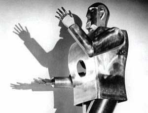

What is AI?
AI, as a field, has several different goals. The textbook breaks them down into four categories: artifacts that [act/think] [humanly/rationally]. In the first dimension, acting vs. thinking, the idea is that an artifact that acts a certain way will exhibit the relevant properties via its motion, its responses to questions, its appearance, etc. On the other hand, an artifact that only thinks a certain way must be studied at a deeper level: we would need to look at the internal structures and algorithms.
Artifacts may act/think like humans or act/think rationally. The authors chose this division because humans do not always act or think rationally. An AI system that should act/think like a human should make human-like mistakes. On the other hand, an AI system that acts/thinks rationally should make the most rational or intelligent choices at every juncture, regardless of what humans would typically do in the same situations.
The authors of the textbook decide that acting rationally is the most important framing of AI. They describe an “intelligent agent” as a system that responds to its environment, and changes it environment (by acting within it), in the most rational manner in order to achieve goals. We’ll see in the Beyond “intelligent agents” lecture notes that this viewpoint is somewhat limiting.
The AI archetype
Gort, preserving peace.
AI, as a quality, or a property of some artifact, or something that an artifact possesses, is a more provocative idea than AI as a field. When many people think about AI, they are thinking about artifacts that “have” AI.
What does an artifact “have” when it has AI?
Responsiveness
A robot that does not respond to its environment is decidedly lacking any intelligence. Many AI researchers believe that an artifact cannot be considered intelligent if it does not respond to changes in its surroundings. This assumes that an intelligent action actually does depend on the state of one’s surroundings…
We find something troubling about an otherwise intelligent being acting (or refusing to act) without proper consideration of their environment. For example, schizophrenic patients with alogia or catatonia suffer from an apparent disconnect with their surroundings.
Autonomy
Intelligent artifacts do not only take instructions from others (if they do at all), they also, to some degree or another, decide their actions on their own. The advanced robot archetype is fully autonomous; it asks for no instructions, and it rarely takes advice.
Literal-mindedness
Artificial intelligence is generally believed to be significantly lacking cleverness or creativity. Machines “just do what they are told.” Even machines that “learn” are only able to learn what they are programmed to learn, no more, no less.
This literalness is a source of major concern for many people who are unfamiliar with the actual workings of the robot. AI researchers are quite aware of how flexible a robot can be, assuming the researcher is able to continue updating the robot’s programming. However, it seems that the popular understanding of AI is that a robot thinks about its world and thinks about our interactions with it under some kind of pathological literal-mindedness. Interestingly, we see the same feature in genies, who typically grant a literal interpretation of a wish.
Chigurh is terrifying (partly) because he strictly adheres to rules. (No Country for Old Men, 2007)
The allure of many robots and other AI systems in science fiction is grounded on literalness and the incommensurability of robot understanding and human understanding of the same situations. While humans often find reasons that rules may be broken, robots typically can make no sense of such exceptions. For example, Gort from The Day the Earth Stood Still is programmed to destroy humanity if/when humans decide to wage nuclear war with each other. No matter the reason for the war; Gort makes no exceptions:
For our policemen, we created a race of robots—(indicating Gort)—Their function is to patrol the planets—in space ships like this one—and preserve the peace. […] At the first sign of violence they act automatically against the aggressor. And the penalty for provoking their action is too terrible to risk. — Klaatu (the alien) speaking, who brought Gort; The Day the Earth Stood Still (1951) (YouTube)
If exceptions were possible, the emotional impact of Gort’s presence would vanish.
Dave disabling AI (seemingly) run amok.
HAL 9000 from 2001: A Space Odyssey, likewise, sacrifices humans for the sake of long-term mission objectives. This feature of the AI archetype is perhaps the most psychologically impactful.
Presence
AI, whether just a computer program or a fully-mobile robot, is generally believed to exist in some particular space and time. That is, the AI is generally believed to be “present” and embodied. You can ask it questions, turn it on or off, repair it when it breaks.
However, intelligence may not be a property only of individuals but also an emergent social or collective phenomenon. And AI systems may be diverse, spread across the internet or across many simple-minded micro-robots that communicate peer-to-peer. Presence is not necessarily a quality of AI systems.
Electronics
Although electronic and electro-mechanical systems are easy to create and control, they may not be the only way to create intelligent artifacts. Biological or even quantum systems may well be the future of AI. Perhaps our sophistication in designing physical and digital systems will yield insights about how to build biological or quantum intelligent systems. Or perhaps entirely new ideas must be brought to bear.

Westinghouse’s Elektro robot (1939), sporting a steel gear, cam and motor skeleton. Elektro in action, and remixed.
Artificiality
Robots are not humans. They are simulations, at best. Thus, typically, they are outside the purview of human rights, etc. Spielberg’s film A.I. explores this issue (there, robots/androids are demolished in public stagings). However, whether a robot can become “more than it is,” i.e., more than just the creation of the watchmaker, is an open question. For a sophisticated and quite provocative take on this, consider listening to a reading of Baudrillard’s Le Xerox et l’infini (read in English) from People Like Us (website; about 30 minutes).